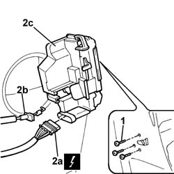

7005N21 front side door lock motor-lock assembley-r r
- Path
- Procedures > 70 FITTINGS > 7005 PASSENGER COMPARTMENT FRONT SIDE DOORS > 7005N front door central locking system > 7005N21 front side door lock motor-lock assembley-r r
- Kind
- repair procedure (removal / refitting; the operation number is the code)
- Applies to
- all engines; all production periods
- Interactive page
- https://sloeber94.github.io/elrnDB-fDbl/en/#/2585019
Applies to: all engines; all production periods
 Removing
Removing
 Refitting
RefittingMake sure that the window is closed.
Disconnect the battery negative terminal.
Op. 7005C11 FRONT SIDE DOOR EXTERIOR HANDLE - R.R
1. Undo the side bolts on the bodywork.
2. Disconnect the electrical connector (2a), remove the door open/close control cable (2b), and remove the lock/motor assembly (2c).
 | Name | Connector |
|---|---|---|
2a | Left front door lock geared motor |
| Name | Connector |
|---|---|---|
2a | Right front door lock geared motor |

Applies to: all engines; all production periods
Refitting
RemovingConnect the electrical connector and fit the door open/close control cable in its seating.
| Name | Connector |
|---|---|---|
- | Left front door lock geared motor |
| Name | Connector |
|---|---|---|
- | Right front door lock geared motor |
Position the door lock gearmotor and fix it with the bolts.
Op. 7005C11 FRONT SIDE DOOR EXTERIOR HANDLE - R.R
Connect the battery negative terminal.
Check that the lock gearmotor is working correctly.
Topics linked from this page (3)
- 7005C11 front side door outside handle r r
- N50 LEFT FRONT DOOR LOCK GEARED MOTOR
- N051 PASSENGER FRONT DOOR LOCK GEARED MOTOR